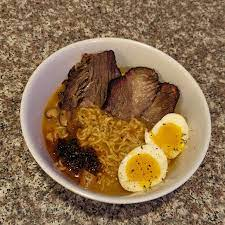

Brisket Shin Ramen

Description
Are you looking for a way to make "varsity" level instant ramen? Follow these simple steps to level-up your instant ramen!
Ingredient List
- 2-4 slices of Left-Over Brisket
- 1 package of Shin Black or Regular Shin Ramen
- 1/8 Onion Sliced
- 1 Chive Sliced
- 1-2 Soft Boiled Egg(s)
- 1/2 tsp Sesame Oil
My Step-by-Step Process
- Bring 2 1/3 cups of water to a boil. Add in seasoning packet(s), sliced onion and chives
- Let onion and chive soften (about a minute) then add noodles and sliced brisket
- Turn off and remove from heat once the noodles are al dente
- Pour into large bowl and plate with soft boiled egg. Enjoy!
Return to Top
Return to Main